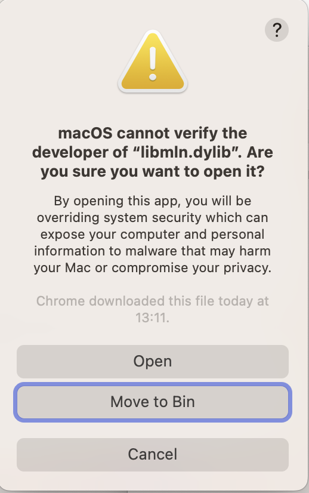
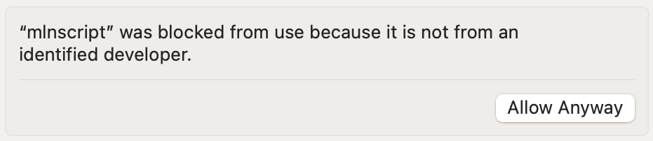

This post shows how to run MLwiN on Apple Silicon Macs from R using the R2MLwiN package (Charlton et al. 2023; Zhang et al. 2016). This is achieved using the non-graphical version of MLwiN called mlnscript (mlnscript.exe on Windows) which has an accompanying library libmln.dylib.1
Obtain the MLN.dmg installer from the Centre for Multilevel Modelling and then install it, see the relevant download page (depending upon whether you are an academic) on the MLwiN website.
On macOS it is recommended to install the files into the /opt/mln/ directory, which you will need to create with Admin permissions, or install to another directory if you don’t have Admin permissions.
Once installed we can check that mlnscript and libmln.dylib are universal binaries,
lipo -archs /opt/mln/mlnscript
#> x86_64 arm64lipo -archs /opt/mln/libmln.dylib
#> x86_64 arm64since both architectures are listed this indicates both files are universal binaries. Apple Silicon Macs will use the arm64 architecture.
Now we need to grant the two files permission to run. To do this run in the Terminal app
/opt/mln/mlnscript --versionwhich will fail with a pop-up similar to the following.

Click Cancel and then go into the System settings… | Privacy & Security and scroll down and click Allow Anyway

Do the same for libmln.dylib.
We can then check it’s running with
/opt/mln/mlnscript --version
#> 3.08which should output the version number, which is currently 3.08.
In R we then install the R2MLwiN package from CRAN.
install.packages("R2MLwiN")For an example we could run one of the demos in the package, which we can list with
demo(package = "R2MLwiN")Then run one (output omitted), for example
library(R2MLwiN)
# if you did not install mlnscript in /opt/mln , set:
# options(MLwiN_path = "/path-to/mlnscript")
demo(UserGuide02)Despite having Win in its name, the core libraries for running MLwiN on other platforms, including macOS for both Intel and Apple Silicon processors and various Linux and Unix distributions (Debian, Fedora, FreeBSD, Rocky, and Ubuntu), have been available for sometime and are straightforward to use from R via the R2MLwiN package.